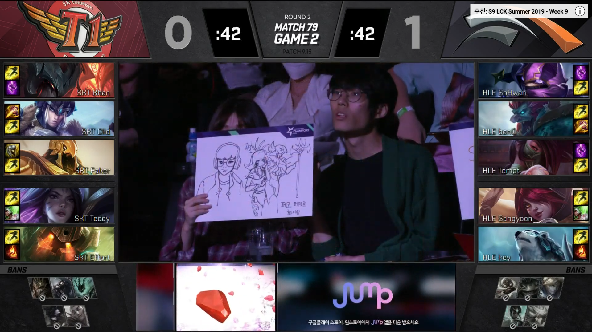

선택과 금지 단계에서는 우리 팀 챔피언과 상대 팀 챔피언을 고려하여 조합 컨셉별로 가장 좋은 챔피언을 추천해줍니다. 예를 들어 자신이 탑라이너인데 강제이니시가 부족하다면 카밀과 같은 챔피언을 추천해줍니다.
선택과 금지 단계가 모두 끝난다면 각 챔피언들이 가지고 있는 세부적인 요소들을 분석하여 어느 타이밍에 어떻게 전투를 하면서 게임을 운영해야 할지 알려줍니다. LCK경기를 예로 들어서 설명해보겠습니다.
SKT는 아트록스 세주아니 아지르 카이사 노틸러스를 가져갔습니다.
| 챔피언 | 초반라인전 | 특징 | 이동스킬여부 | 한타 |
| 아트록스 | 열세 | 강력한유지력 | 이동기 | 전사형지속딜러 |
| 세주아니 | 열세 | 강력CC기,탱킹 | 이동기 | 이니시,메인탱커 |
| 아지르 | 우세 | 존컨트롤,진입후진형붕괴 | 우월한이동스킬 | 밸런스형AP딜러 |
| 카이사 | 경합 | 순간진입폭딜 | 투명이속증가 | 순간진입폭딜 |
| 노틸러스 | 경합 | 강한CC기,탱킹 | 그랩진입 | 이니시,서브탱킹 |
조합 장점 : 중후반 정석한타를 갔을 때 상대팀에 비해 우위/ 단점 : 초반 탑정글부분 취약
HLE는 케넨, 트런들, 아칼리, 자야, 볼리베어를 가져갔습니다.
| 챔피언 | 초반라인전 | 특징 | 이동스킬여부 | 한타 |
| 케넨 | 우세 | 탑라인최상위 | 이속증가 | 라인전주도권,스플릿가능 |
| 트런들 | 우세 | 탱킹,세주아니카운터 | 이속증가,기둥 | 탱커 |
| 아칼리 | 열세 | 절대은신 | 우월한어그로핑퐁,진입기 | 한타 스플릿 모두 강력한 암살자 |
| 자야 | 경합 | 존컨트롤 | 궁극기 회피 | 우월한생존기 |
| 볼리베어 | 경합 | 순간cc기,탱킹 | 뚜벅이 | 점멸변수 |
조합 평가 : 라인챔피언 모두 라인전이 강력하고 탑 미드 챔피언이 스플릿 상황에서 우위를 점할 수 있는 챔피언들을 선택했습니다.
총평 : 탑 미드 바텀 어떤 라인이던지 정글개입에 따라 킬이 나기 쉬운 챔피언들이기 때문에 초반의 정글개입 여부가 상당히 중요할 것으로 보입니다. 전부 다 특징은 다르지만 공통점은 라인전에 포커스를 맞춘 벤픽이었습니다. 정글러에게는 갱킹 상황이, 라이너에게도 초반 갱킹 호응과 역갱킹여부가 제일 중요한 벤픽구도입니다.
미드 라이너 기준으로 설명하겠습니다.상대정글러와 우리 정글러가 어떤 라인을 중심으로 게임을 풀어가는 성향이 있는지 분석한 뒤, 어느 레벨에 어떻게 킬을 따내고 오브젝트를 가져갈 수 있는지 세부적인 플레이지침도 설명해줍니다.
블라디미르 6레벨 점화 qwer 풀콤보 솔로킬 vs 오리아나 초시계나 마법무효화망토나 보호막 스펠 필요/ 상대정글러 자르반 6레벨 이후 미드 한쪽 옆방향 시야 체크 필요 (칼날부리 eqr 이니시)
이렇게 선택과 금지단계, 1레벨부터 6~8레벨까지의 초반 라인전, 갱킹 설계, 팀파이트 유형에 대한 설명을 해줌으로서 5명의 팀원모두가 자신들이 어떻게 플레이를 하는 것이 최선인지를 쉽게 파악할 수 있습니다.